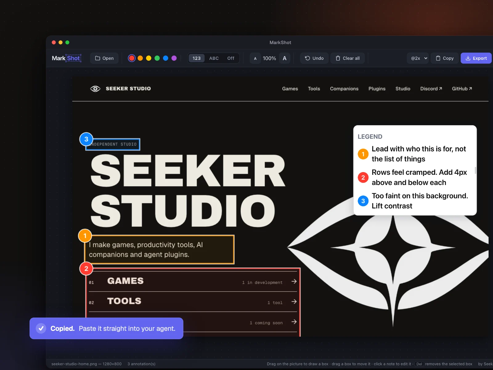

T-01Public prototype

Screenshot feedback
MarkShot
Point at the problem. Say what should change.
Drop in a screenshot, draw a box around each problem and type a note. Every box gets a number and its note goes into a legend beside the picture, so an AI agent reads “1. the button is misaligned” instead of guessing at a red scribble.
Exported PNGs carry the boxes and notes inside the file, so reopening one picks up where you left off.
- Built with
- One HTML file, Canvas, no dependencies